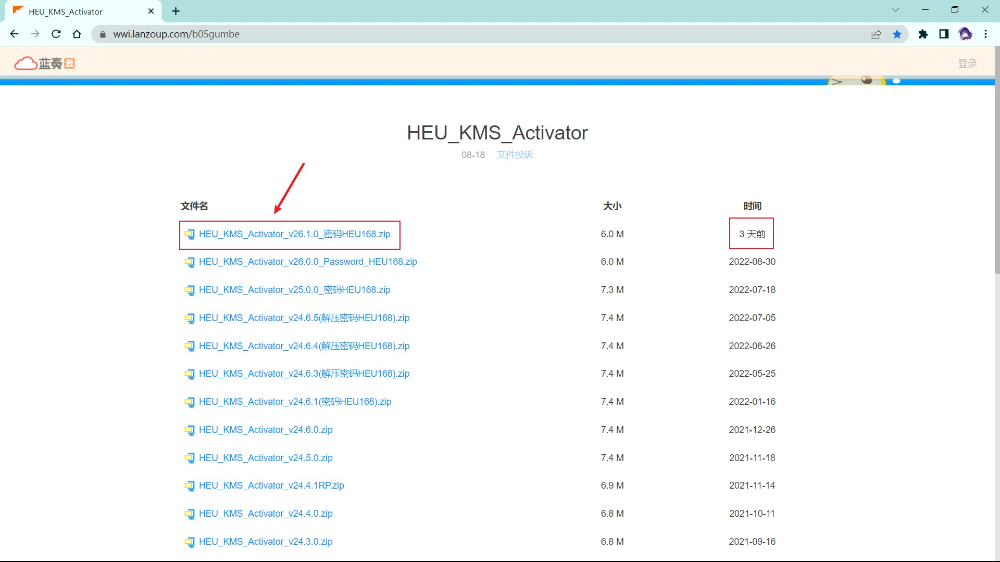
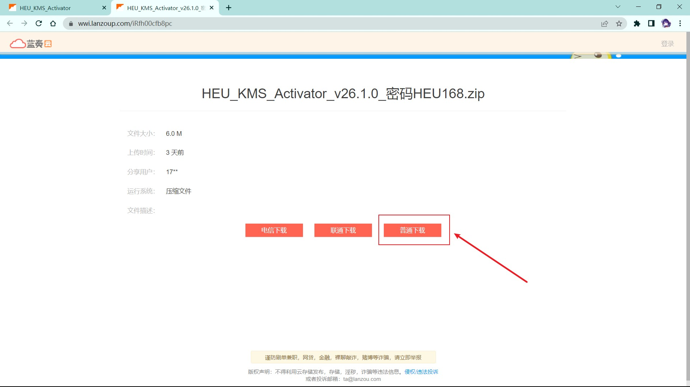
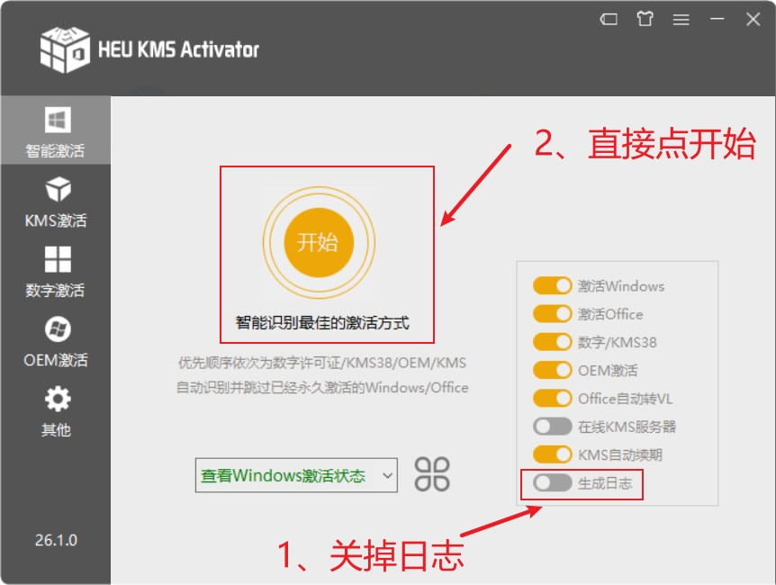
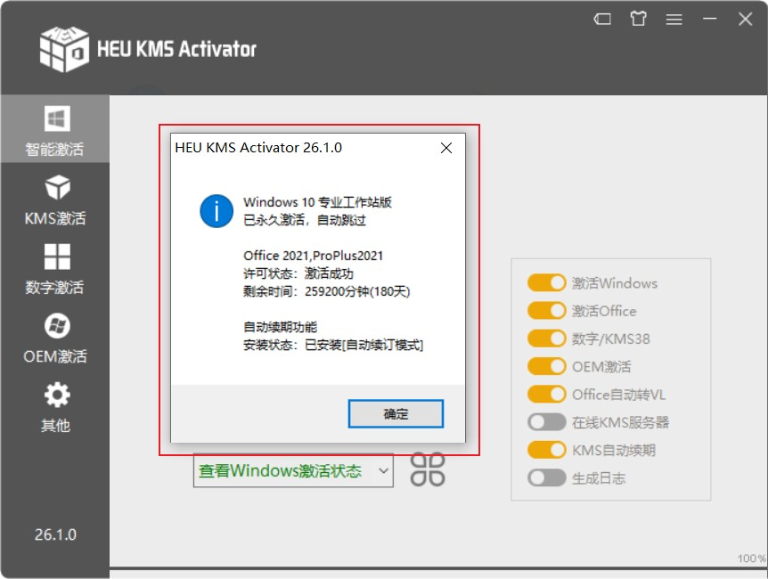

Office是许多Windows用户常用的软件之一。但是重装系统后该怎么重新下载安装，却使得有些人摸不着头脑。今天在这里推荐两款下载工具。
Office下载工具
1、Office Tool Plus
网站链接： https://otp.landian.vip/zh-cn/download.html
一定要下载包含框架的zip
图示
1、进入网站

2、解压缩，打开文件夹

3、运行文件

4、点击“部署”

5、进入部署页面后，选择产品版本、组件、语言、体系结构（32位或64位）、通道。

6、设置完毕后点击“开始部署”，信息核实无误后点击“是”。
然后将自动从微软服务器下载并安装Office，等待提示完毕的消息即可。

2、OFFICE 2013-2021 C2R
下载链接： https://wwz.lanzoum.com/iGuVX0d43fmd
密码：9t5t
Office 2013-2021 C2R是由俄罗斯人Ratiborus制作的Microsoft Office下载、安装、管理的自定义部署工具。它可以在线下载安装 Office 2013-2021 的各个版本，离线安装部署Office镜像，自定义安装Office产品组件，支持Office零售版转换批量许可版，在线KMS激活Office，可选内置Office密钥许可证安装。
图示
1、下载

2、运行软件

3、设置好下载安装

Office激活
HEU KMS Activator
下载地址：
地址1： https://wwi.lanzoup.com/b05gumbe
密码：9xum
地址2： https://www.123pan.com/s/xY3DVv-375HA
地址3： https://github.com/zbezj/HEU_KMS_Activator/releases
解压密码：HEU168
优点：方便快捷
图示
1、进入网站
2、下载
3、关闭Windows实时保护


4、解压缩包，打开文件夹

5、运行文件

6、是

7、开始
8、结束
